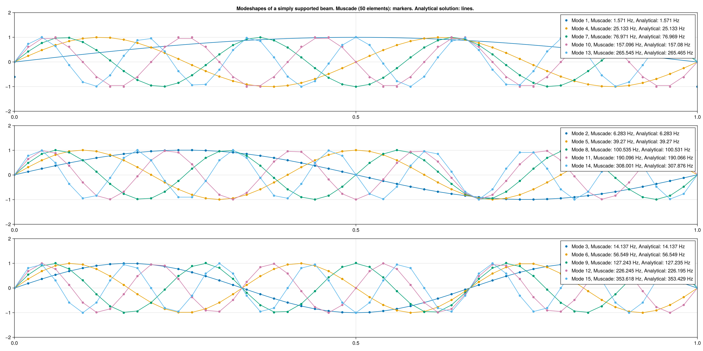

Modal analysis of a beam
Beam simply supported at both ends
using Muscade, StaticArrays, GLMakie
using Muscade.Toolbox
L = 1; # Beam length [m]
q = 0.0; # Uniform lateral load [N/m]
EI₂ = 1; # Bending stiffness [Nm²]
EI₃ = 1; # Bending stiffness [Nm²]
EA = 1e6; # Axial stiffness [N]
GJ = 1e6; # Torsional stiffness [Nm²]
μ = 1;
ι₁= 1;Create model
nel = 50
Nnod = nel+1
nodeCoord = hcat((0:L/nel:L),zeros(Float64,Nnod,2))
mat = BeamCrossSection(EA=EA,EI₂=EI₂,EI₃=EI₃,GJ=GJ,μ=μ,ι₁=ι₁)
model = Model(:TestModel)
nodid = addnode!(model,nodeCoord)
mesh = hcat(nodid[1:Nnod-1],nodid[2:Nnod])
eleid = addelement!(model,EulerBeam3D,mesh;mat=mat,orient2=SVector(0.,1.,0.));Set boundary conditions and constraints
[addelement!(model,Hold,[nodid[1]] ;field) for field∈[:t1,:t2,:t3,:r1]] # Simply supported end 1
[addelement!(model,Hold,[nodid[end]];field) for field∈[:t1,:t2,:t3,:r1]] # Simply supported end 2
[addelement!(model,Hold,[nodid[nodeidx]];field=:t3) for nodeidx∈2:Nnod-1] # Enforce beam motions in one dimension to obtain planar modeshapes
@functor with(q,L,Nnod) val(t) = sin(t)*q*L/Nnod
[addelement!(model,DofLoad,[nodid[nodeidx]];field=:t2,value=val) for nodeidx=1:Nnod]; # Distributed vertical load qStatic analysis
initialstate = initialize!(model);
state = solve(SweepX{0};initialstate,time=[0.]);
Muscade: SweepX{0} solver
step 1 converged in 1 iterations. |Δx|=0.0e+00 |Lλ|=0.0e+00
nel=158, ndof=363, nstep=1, niter=1, niter/nstep= 1.00
SweepX{0} time: 11 [s]
Muscade done.Solve eigenvalue problem
nmod = 15
res = solve(EigX{ℝ};state=state[1],nmod);
Muscade: EigX{Real} solver
Assembling
Solving Eigenvalues
EigX{Real} time: 20 [s]
Muscade done.Analytical solutions for the natural frequency of a simply supported beam See e.g. https://roymech.org/UsefulTables/Vibrations/NaturalVibrations_derivation.html
fₙ(k) = √(EI₂/μ)*(k^2*π)/(2*L^2)
Φₙ(k,x) = sin.(k*π/L.*x);Display solution and comparison against analytical solution
fig = Figure(size = (2000,1000))
axes = [Axis(fig[idxLine,1], yminorgridvisible = false,xminorgridvisible = false ) for idxLine=1:3]
axes[1].title = "Modeshapes of a simply supported beam. Muscade (" *string(nel)*" elements): markers. Analytical solution: lines. "
for idxMod=1:nmod
eigres = increment(state[1],res,[idxMod],[1]);
t2_eig = getdof(eigres;field=:t2,nodID=nodid[1:Nnod])
δ = sign(Φₙ(idxMod,0:L/nel:L)'*t2_eig) * maximum(t2_eig)
selectAxis = axes[mod(idxMod-1,3)+1]
labelStr= "Mode "*string(idxMod)*", Muscade: "*string(round(res.ω[idxMod]/(2π),digits=3))*" Hz, Analytical: " *string(round(fₙ(idxMod),digits=3))* " Hz"
scatter!(selectAxis,(0:L/nel:L), t2_eig[:]/δ, label=labelStr );
lines!( selectAxis,(0:L/nel:L), Φₙ(idxMod,0:L/nel:L) );
end
for ax∈axes;
xlims!(ax,0,1); ylims!(ax, -2,2); axislegend(ax)
end
currentDir = @__DIR__
if occursin("build", currentDir)
save(normpath(joinpath(currentDir,"..","src","assets","beamModes.png")),fig)
elseif occursin("examples", currentDir)
save(normpath(joinpath(currentDir,"beamModes.png")),fig)
end
This page was generated using Literate.jl.